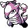
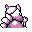

#105
Marowak
Ground
The bone it holds is its key weapon. It throws the bone skillfully like a boomerang to KO targets
Base stats Total 345
HP60
Attack80
Defense110
Speed45
Special50
Details
- Species
- Bonekeeper
- Height
- 3'03"
- Weight
- 99.0 lb
- Catch rate
- 75
- Base exp
- 124
- Growth
- Medium Fast
Level-up moves
LevelMoveType
StartBone ClubGround
StartGrowlNormal
StartLeerNormal
StartOutrageDragon
Lv 6Tail WhipNormal
Lv 21HeadbuttNormal
Lv 23RageNormal
Lv 24Focus EnergyNormal
Lv 31DigGround
Lv 33BonemerangGround
Lv 38EarthquakeGround
Evolution
Evolves from Cubone
Where to find
TM / HM
TM01 Mega PunchTM03 Swords DanceTM05 Mega KickTM06 ToxicTM08 Body SlamTM09 Take DownTM10 Double-EdgeTM11 BubblebeamTM12 Water GunTM13 Ice BeamTM14 BlizzardTM15 Hyper BeamTM17 SubmissionTM18 CounterTM19 Seismic TossTM26 EarthquakeTM27 FissureTM28 DigTM31 MimicTM32 Double TeamTM34 BideTM37 FlamethrowerTM38 Fire BlastTM39 SwiftTM44 RestTM48 Rock SlideTM50 SubstituteHM04 Strength